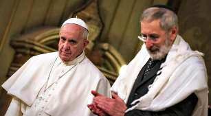

Il l’a dit au cours de sa rencontre avec le pape à la synagogue. Et il s’agit d’un refus de "discuter de théologie" avec l’Église catholique. Est-ce parce que les juifs ont peur que l’on ne distingue plus ce qui les différencie des chrétiens?

ROME, le 23 janvier 2016 –Du côté catholique, presque personne ne l’a remarqué ni fait remarquer. Mais, du côté juif, si. Il s’agit de ce "non" sec que le grand rabbin de Rome, Riccardo Di Segni, a dit au pape François venu en visite à la synagogue, le dimanche 17 janvier:
« Nous n’accueillons pas le pape pour discuter de théologie. Chaque système est autonome, la foi n’est pas un objet d’échange et de négociations politiques ».
C’était un « non » préventif. Parce que, tout de suite après, François a pris la parole. Et c’est en vain que, dans son discours, le pape a proposé aux juifs de procéder ensemble à un approfondissement théologique du rapport entre le judaïsme et l’Église. Cette proposition que le rabbin Di Segni avait déjà refusée Afin de motiver sa proposition de dialogue théologique François a cité deux documents. Le premier est la déclaration « Nostra ætate » du concile Vatican II, qui – a-t-il dit – « a défini théologiquement pour la première fois, de manière explicite, les relations de l’Église catholique avec le judaïsme », sans, bien évidemment, résoudre tous les problèmes mais en « fournissant une stimulation très importante pour des réflexions supplémentaires nécessaires ». Le second est le document publié le 15 décembre 2015 par la commission vaticane pour les relations religieuses avec le judaïsme, document qui – a déclaré le pape – « aborde les questions théologiques ayant émergé au cours des décennies qui ont suivi la promulgation de 'Nostra ætate' ». Et François a poursuivi de la manière suivante:
« La dimension théologique du dialogue entre juifs et catholiques mérite d’être toujours plus approfondie, et je désire encourager tous ceux qui sont engagés dans ce dialogue à continuer dans ce sens, avec discernement et persévérance. D’un point de vue théologique, précisément, le lien indéfectible qui unit les chrétiens et les juifs apparaît clairement. Les chrétiens, pour se comprendre eux- mêmes, ne peuvent pas ne pas faire référence aux racines juives, et l’Église, bien que professant le salut à travers la foi en Jésus-Christ, reconnaît l’irrévocabilité de l’Ancienne Alliance et l’amour constant et fidèle de Dieu pour Israël ».
En s’exprimant de cette façon, le pape Jorge Mario Bergoglio s’est placé pleinement dans la continuité de ses prédécesseurs, en particulier Benoît XVI. Ce dernier a certes refusé de faire de la foi un objet de dialogue entre le christianisme et les autres religions, mais il a toujours reconnu qu’il y a, entre le christianisme et le judaïsme, une relation unique, très spéciale, qui rend non seulement possible mais même nécessaire un dialogue commun, y compris au plan théologique. Joseph Ratzinger avait atteint les points culminants de sa réflexion théologique concernant les relations entre les religions juive et chrétienne dans la préface du document publié par la commission biblique pontificale le 24 mai 2001 et intitulé « Le peuple juif et ses Saintes Écritures dans la Bible chrétienne » mais surtout dans les trois volumes de son Jésus de Nazareth, en des pages qui, ces jours derniers, ont encore été reconnues comme « indépassables » par une personnalité juive de premier plan telle que Sergio Yitzhak Minerbi, qui est l’un des plus importants experts en matière de relations entre les juifs et les catholiques. Eh bien non seulement le document qui a été diffusé par le Vatican le 15 décembre dernier se situe au même niveau que ces deux textes, mais il va même plus loin, notamment parce qu’il se présente non pas comme « un document magistériel ou un enseignement doctrinal de l’Église catholique » mais simplement « comme point de départ d’un approfondissement de la pensée théologique destiné à enrichir et à intensifier la dimension théologique du dialogue juif-catholique ». Il y a surtout deux points, dans ce document, qui ont reçu un accueil positif de la part des juifs. Le premier se trouve là où le texte considère comme privée de tout fondement « la théologie du remplacement ou de la supersession, qui oppose deux entités séparées, l’Église des gentils et la Synagogue rejetée dont elle aurait pris la place ». Et cela en raison de l’"irrévocabilité" de la promesse faite par Dieu au peuple d’Israël. Le second se trouve là où le texte exclut que l’Église puisse mener une « action missionnaire institutionnelle spécifique en direction des juifs », dans le but de les convertir. Voici ce qui dit, à ce sujet, le paragraphe 40 du document 1:
« On comprendra facilement, dès lors, que la notion de 'mission aux juifs' est une question extrêmement délicate et sensible pour les juifs car, à leurs yeux, elle touche à l’existence même du peuple juif. C’est aussi une question problématique pour les chrétiens pour qui le rôle salvifique universel de Jésus Christ et donc la mission universelle de l’Église ont une importance fondamentale. Pour cette raison, l’Église a été amenée à considérer l’évangélisation des juifs, qui croient dans le Dieu unique, d’une manière différente de celle auprès des peuples ayant une autre religion et une autre vision du monde. En pratique, cela signifie que l’Église catholique ne conduit et ne promeut aucune action missionnaire institutionnelle spécifique en direction des juifs. Mais alors que l’Église rejette par principe toute mission institutionnelle auprès des juifs, les chrétiens sont néanmoins appelés à rendre témoignage de leur foi en Jésus-Christ devant les juifs, avec humilité et délicatesse, en reconnaissant que les juifs sont dépositaires de la Parole de Dieu et en gardant toujours présente à l’esprit l’immense tragédie de la Shoah ».
Mais alors, si la qualité du dialogue théologique que le pape François a proposé une nouvelle fois aux juifs atteint ce niveau, pourquoi le rabbin Di Segni a-t-il dit « non »? Un élément de réponse intéressant est apporté par le commentaire de la visite du pape à la synagogue qu’Anna Foa - elle est juive et professeur d’histoire moderne à l'Université "La Sapienza" de Rome - a écrit dans le journal du judaïsme italien Pagine Ebraiche ["Pages Juives"]. Ce commentaire a été reproduit intégralement dans L'Osservatore Romano du 18-19 janvier 2016. Anna Foa a certes reconnu qu’elle considérait comme un « message fort » émis par la visite du pape à la synagogue
« le fait que des juifs et des chrétiens se soient réunis, à un moment où les chrétiens font l’objet des persécutions les plus sanguinaires et où l’antisémitisme réapparaît de manière de plus en plus visible, que ce soit dans les proclamations de Daesh ou dans la vie quotidienne des juifs, ceux de la diaspora comme ceux qui vivent en Israël »
Un rappel fort, donc, « du fait que les religions peuvent et doivent être des facteurs de paix et non pas de guerre ». Mais elle a ensuite ajouté:
« Une autre question, située à un niveau moins élevé que ces grands thèmes qui concernent le destin du monde mais tout aussi importante, porte sur les relations entre les juifs et les chrétiens. La journée du 17 janvier a été caractérisée par de grands progrès dans le dialogue, progrès qui ont été reconnus, au cours des célébrations qui ont marqué le cinquantenaire de 'Nostra ætate', par de nombreuses voix faisant autorité et en particulier par le document que la commission pour les relations religieuses avec le judaïsme a diffusé le 10 décembre 2015 […] et qui contient des affirmations très innovantes. Et c’est à ce document-là que le pape a fait référence aujourd’hui à la synagogue. Une ouverture théologique, une invitation forte, adressée à tous ceux qui sont engagés dans le dialogue, pour qu’enfin ils étudient également sa dimension théologique. Ce discours théologique, en revanche, a été reporté à plus tard de manière explicite par le monde juif, au nom de l’invitation à des pratiques, des actions, des projets communs, comme Rav Di Segni a tenu à le souligner. Reporté à plus tard, peut-être, mais pas abandonné. Je ne considère pas comme une transformation peu importante le fait que l’Église ait complètement renoncé à sa tradition séculaire de mission en direction des juifs au motif que celle-ci n’est pas nécessaire dans le contexte du salut et qu’elle ait fait des déclarations claires et ne prêtant pas à discussion à propos de la 'vexata quæstio' de la théologie de la substitution, selon laquelle les juifs auraient été remplacés par les chrétiens en tant que peuple choisi par Dieu. Et je ne crois pas non plus que les juifs hésitent à reconnaître que, après tant d’invitations à se prononcer sans hésitations et sans ambigüités à propos de ces questions, cette déclaration est enfin arrivée. La visite qui a eu lieu aujourd’hui, a affirmé Rav Di Segni, veut dire que l’Église n’a pas l’intention de faire machine arrière sur le chemin de la réconciliation. Du côté des juifs, cependant, la réponse n’est pas claire et beaucoup de réserves peuvent être perçues dans la prudence avec laquelle ils s’expriment. Ces réserves sont-elles dues uniquement au fait que le discours théologique apparaît incompréhensible à la plupart des gens? Ou au contraire n’y a-t-il pas également des craintes et des hésitations dans la reconnaissance du caractère novateur du pas qu’a franchi l’Église? Notamment la crainte que, l’Église ayant renoncé à convertir les juifs, le rapprochement entre les juifs et les chrétiens ne conduise à l’atténuation des différences doctrinales? Dans un article qui a été publié dans L'Osservatore Romano il y a quelques jours, le directeur de Pagine Ebraiche, Guido Vitale, a rappelé une interview que lui avait accordée, en la lointaine année 1986, le rabbin Elio Toaff, lors de la visite de Jean-Paul II à la synagogue. À cette occasion, Toaff avait parlé précisément de ces craintes: "Une révolution radicale, une renonciation à la tentation de marginaliser le peuple juif, un geste qui fera naître des relations nouvelles entre deux religions qui ont en commun les mêmes racines historiques. De nouvelles relations naissent, sur un pied d’égalité et de collaboration. Et si quelques juifs peuvent peut-être craindre le danger d’une certaine activité missionnaire de la part de l’Église, nous disons qu’il s’agit d’un risque auquel, si tant est qu’il existe, nous pensons être en mesure de résister'. » Anna Foa n’en a pas dit davantage. Mais elle a posé la question. Au monde juif plus qu’au monde chrétien.
En tout cas, le « non » du rabbin Di Segni au pape François n’est pas celui de tous les juifs et il n’est pas formulé pour toujours. D’autre part toutes les motivations n’en ont pas encore été exprimées. À la suite de sa rencontre avec le pape à la synagogue, Di Segni lui-même a donné une première explication de sa pensée dans le cadre d’une interview qu’il a accordée au vaticaniste Andrea Gagliarducci et qui a été publiée, le 21 janvier, par l’agence de presse ACI Stampa:
« J’ai toujours affirmé que, en tant que juifs, nous devions réfléchir à nos relations avec le christianisme, y compris au point de vue théologique. Cependant ces réflexions ne se développent pas au sein du judaïsme de la même manière que dans un organisme tel que l’Église, qui dispose d’un important système doctrinal, d’une hiérarchie, et d’un chef qui peut organiser ces choses- là. Chez nous, les manières d’agir et les moments pour le faire sont différents. Il est certes important de prêter attention à ce que disent les autres, mais la théologie est un domaine interne à chaque religion. Chaque foi et surtout ces thèmes-là ne sont pas des sujets de discussion politique; par conséquent il faut laisser du temps et de l’espace à l'évolution des réflexion de chacun ».
La discussion va certainement poursuivre son développement et elle méritera d’être suivie dans son intégralité.
Voir aussi:
Texte intégral du discours prononcé par le pape François à la synagogue de Rome, le dimanche 17 janvier 2016. Discours de Riccardo Di Segni, grand rabbin de Rome (en italien). Document publié le 15 décembre 2015 par la commission pour les relations religieuses avec le judaïsme: Les dons et l'appel de Dieu son irrévocables. Document publié le 24 mai 2001 par la commission biblique pontificale, avec sa préface rédigée par celui qui était alors le cardinal Joseph Ratzinger: Le peuple juif et ses Saintes Écritures dans la Bible chrétienne.
Traduction française par Charles de Pechpeyrou, Paris, France.
1 « Les dons et l’appel de Dieu sont irrévocables », Rome, 10 décembre 2015. Voir mon Commentaire de ce document capital. Note de Menahem Macina. ↩